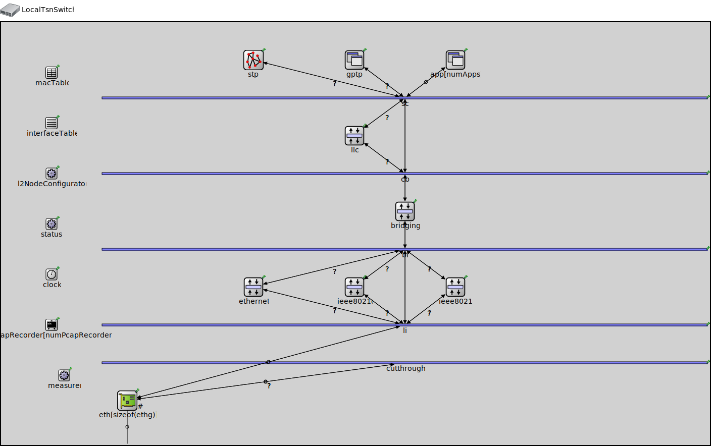

Package: inet.showcases.tsn.framereplication.manualconfiguration
LocalTsnSwitch
compound module(no description)
Inheritance diagram
The following diagram shows inheritance relationships for this type. Unresolved types are missing from the diagram.
Used in
| Name | Type | Description |
|---|---|---|
| ManualConfigurationShowcase | network | (no description) |
Extends
| Name | Type | Description |
|---|---|---|
| TsnSwitch | compound module |
This module represents a Time-Sensitive Networking (TSN) switch that supports time synchronization, per-stream filtering and policing, scheduling and traffic shaping, frame replication and elimination, frame preemption and cut-through switching for Ethernet networks. All TSN features are optional and they can be combined with other Ethernet features. |
Parameters
| Name | Type | Default value | Description |
|---|---|---|---|
| recordPcap | bool | false | |
| numPcapRecorders | int | recordPcap ? 1 : 0 | |
| numApps | int | 0 | |
| hasStatus | bool | false | |
| hasStp | bool | false | |
| hasGptp | bool | hasTimeSynchronization | |
| hasCutthroughSwitching | bool | false | |
| fcsMode | string | "declared" | |
| spanningTreeProtocol | string | "Stp" | |
| numEthInterfaces | int | 0 |
minimum number of ethernet interfaces |
| hasTimeSynchronization | bool | false |
enable IEEE 802.1 AS time synchronization |
| hasIngressTrafficFiltering | bool | false |
enable IEEE 802.1 Qci ingress per-stream filtering |
| hasEgressTrafficShaping | bool | false |
enable IEEE 802.1 egress traffic shaping (credit based shaping, time aware shaping, asynchronous shaping) |
| hasStreamRedundancy | bool | false |
enable IEEE 802.1 CB frame replication and elimination |
| hasIncomingStreams | bool | false |
enable IEEE 802.1 stream decoding |
| hasOutgoingStreams | bool | false |
enable IEEE 802.1 stream identification and stream encoding |
| hasFramePreemption | bool | false |
enable IEEE 802.1 Qbu frame preemption |
Properties
| Name | Value | Description |
|---|---|---|
| networkNode | ||
| labels | node | |
| display | i=device/switch | |
| defaultStatistic | gateStateChanged:vector,eth[0].macLayer.queue.gate[0] |
Gates
| Name | Direction | Size | Description |
|---|---|---|---|
| ethg [ ] | inout | numEthInterfaces |
Unassigned submodule parameters
| Name | Type | Default value | Description |
|---|---|---|---|
| macTable.agingTime | double | ||
| macTable.forwardingTableFile | string | ||
| interfaceTable.displayAddresses | bool | false |
whether to display IP addresses on links |
| l2NodeConfigurator.interfaceTableModule | string | ||
| l2NodeConfigurator.l2ConfiguratorModule | string | "l2NetworkConfigurator" |
the absolute path to the ~L2NetworkConfigurator; use "" if there is no configurator |
| status.initialStatus | string | "UP" |
TODO @signal, @statistic |
| pcapRecorder.verbose | bool | true |
whether to log packets on the module output |
| pcapRecorder.pcapFile | string | "" |
the PCAP file to be written |
| pcapRecorder.fileFormat | string | "pcapng" | |
| pcapRecorder.snaplen | int | 65535 |
maximum number of bytes to record per packet |
| pcapRecorder.dumpBadFrames | bool | true |
enable dump of frames with hasBitError |
| pcapRecorder.moduleNamePatterns | string | "wlan[*] eth[*] ppp[*]" |
space-separated list of sibling module names to listen on |
| pcapRecorder.sendingSignalNames | string | "packetSentToLower" |
space-separated list of outbound packet signals to subscribe to |
| pcapRecorder.receivingSignalNames | string | "packetReceivedFromLower" |
space-separated list of inbound packet signals to subscribe to |
| pcapRecorder.dumpProtocols | string | "ethernetmac ppp ieee80211mac" |
space-separated list of protocol names as defined in the Protocol class |
| pcapRecorder.packetFilter | object | "*" |
which packets are considered, matches all packets by default |
| pcapRecorder.helpers | string | "" |
usable PcapRecorder::IHelper helpers for accept packettype and store/convert packet as specified linktype currently available: "inet::AckingMacToEthernetPcapRecorderHelper" |
| pcapRecorder.alwaysFlush | bool | false |
flush the pcapFile after each write to ensure that all packets are captured in case of a crash |
| pcapRecorder.displayStringTextFormat | string | "rec: %n pks" | |
| stp.helloTime | double | ||
| stp.forwardDelay | double | ||
| stp.maxAge | double | ||
| stp.bridgePriority | int | ||
| stp.visualize | bool | ||
| sc.displayStringTextFormat | string | "processed %p pk (%l)" |
determines the text that is written on top of the submodule |
| sc.forwardServiceRegistration | bool | true | |
| sc.forwardProtocolRegistration | bool | true | |
| cb.displayStringTextFormat | string | "processed %p pk (%l)" |
determines the text that is written on top of the submodule |
| cb.forwardServiceRegistration | bool | true | |
| cb.forwardProtocolRegistration | bool | true | |
| bl.displayStringTextFormat | string | "processed %p pk (%l)" |
determines the text that is written on top of the submodule |
| bl.forwardServiceRegistration | bool | true | |
| bl.forwardProtocolRegistration | bool | true | |
| li.displayStringTextFormat | string | "processed %p pk (%l)" |
determines the text that is written on top of the submodule |
| li.forwardServiceRegistration | bool | true | |
| li.forwardProtocolRegistration | bool | true | |
| cutthrough.displayStringTextFormat | string | "processed %p pk (%l)" |
determines the text that is written on top of the submodule |
| cutthrough.forwardServiceRegistration | bool | true | |
| cutthrough.forwardProtocolRegistration | bool | true | |
| eth.bitrate | double |
Source code
module LocalTsnSwitch extends TsnSwitch { @defaultStatistic("gateStateChanged:vector"; module="eth[0].macLayer.queue.gate[0]"); }File: showcases/tsn/framereplication/manualconfiguration/ManualConfigurationShowcase.ned
 This documentation is released under the Creative Commons license
This documentation is released under the Creative Commons license